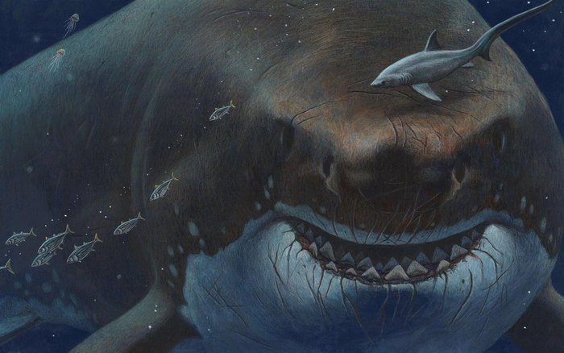
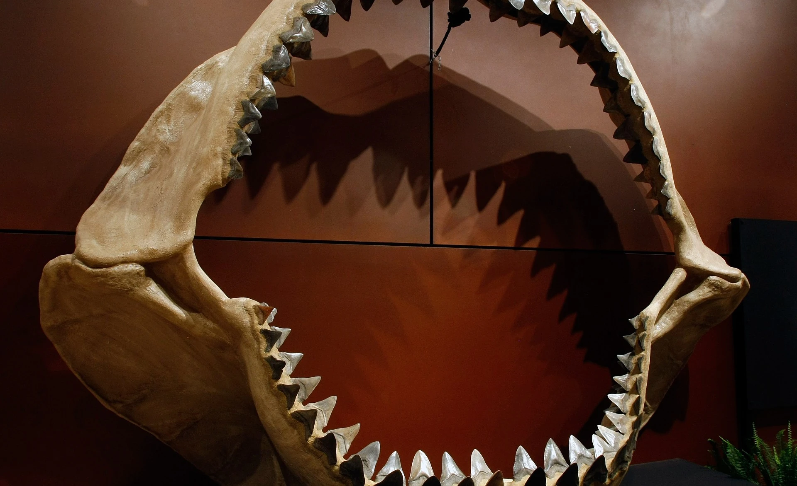
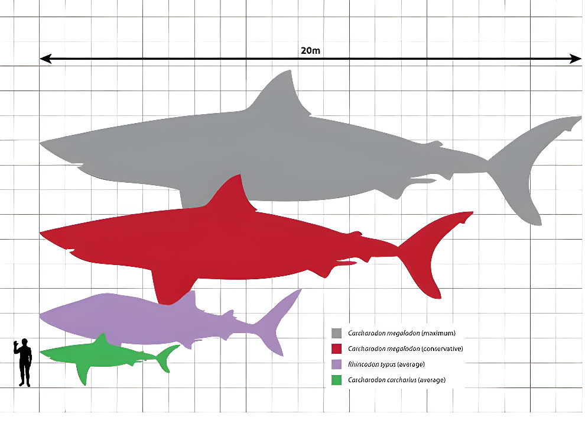
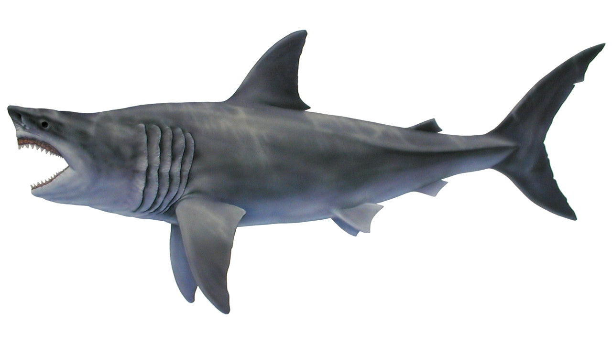
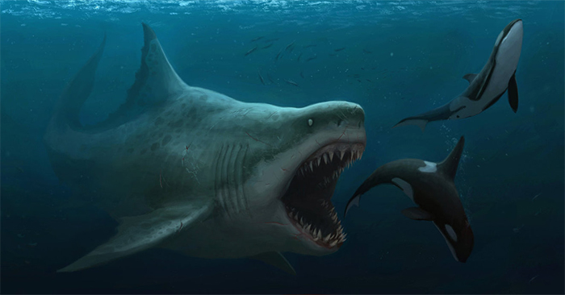
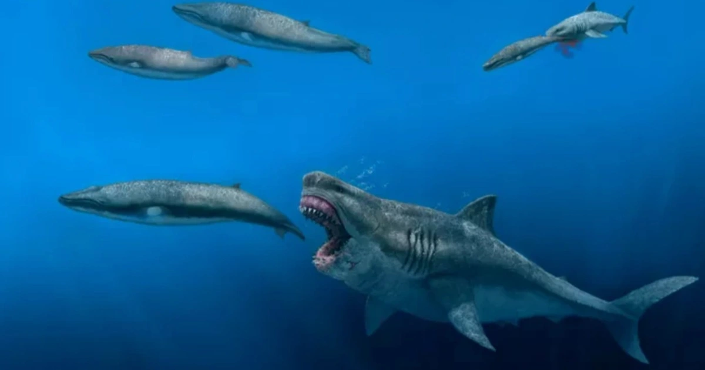
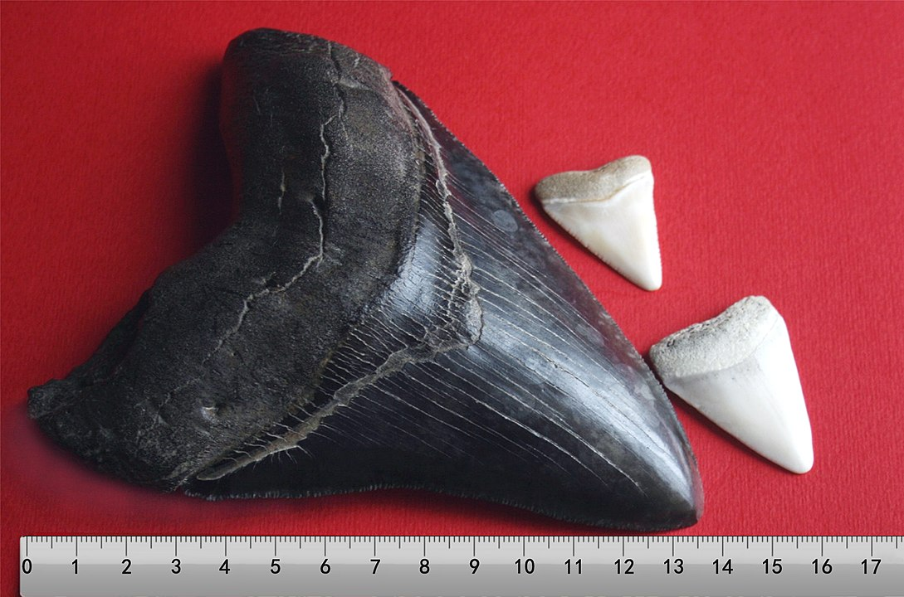
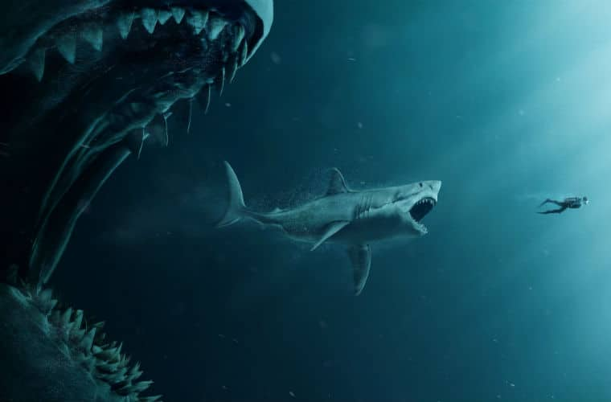
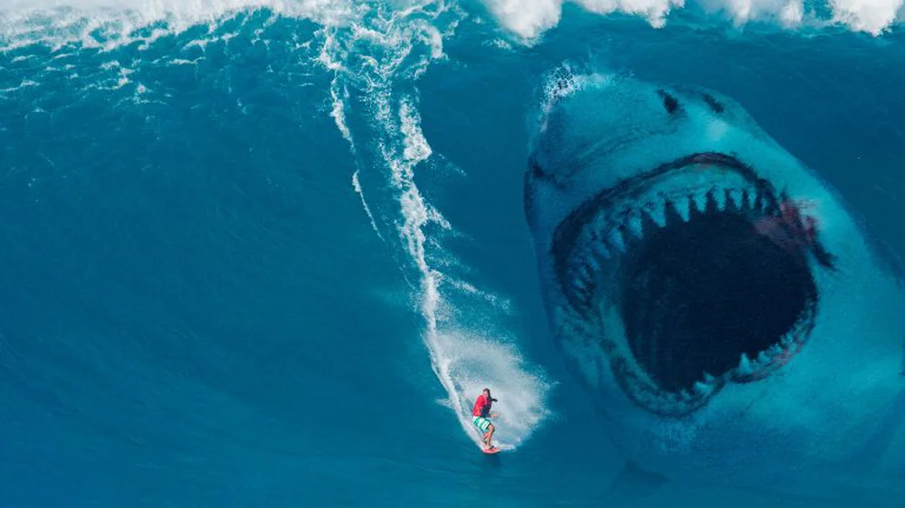

Megalodon
Siêu Cá Mập thế Trung Tân
Tổng quan
Thế
Miocene
Họ
Otodontidae
Chi
Otodus
Dài
20.3 m
Nặng
106 tấn
Thức ăn


Megalodon là một loài cá mập khổng lồ đã tuyệt chủng, sống cách nay khoảng 15.9 tới 2.6 triệu năm, vào thời kỳ Đại Tân Sinh. Thuộc lớp Chondrichthyes, họ Otodontidae. Việc phân loài của chi Otodus hoặc Otodont là đề tài tranh luận trong gần một thế kỷ, và vẫn chưa thống nhất, đó là hai phân loài Otodus Megalodon hoặc Otodont Megalodon.
Nguồn: wikipedia.org
Phân bố
Khắp các đại dương trên hành tinh
Thông tin thêm về Megalodon
Kỷ nguyên và phân bố
Đã có nhiều nghiên cứu khác nhau về loài cá mập khổng lồ này. Các nhà khảo cổ đã tìm thấy một số tàn tích của loài này ở các vùng lãnh thổ khác nhau như quần đảo Canary, lục địa châu Á, châu Úc và châu Mỹ. Ngoài ra, răng của Megalodon đã được tìm thấy ở những vùng biển nông, ấm áp bao phủ phần lớn hành tinh, ngoại trừ Nam Cực. Những nghiên cứu này đã tiết lộ rằng loài săn mồi này đã có mặt ở tất cả các đại dương trên Trái Đất từ giữa thế Miocene đến cuối thế Pliocene, thuộc thời kỳ Neogene, cách đây khoảng 15.9 tới 2.6 triệu năm trước.
Tên khoa học
Otodus Megalodon - "Chiếc răng khổng lồ", bắt nguồn từ tiếng Hy Lạp cổ đại dựa vào đặc điểm hàm răng khổng lồ của chúng lớn hơn gần ba lần so với răng của một loài cá mập trắng lớn hiện đại.
Kích thước
Megalodon được xem là một trong những động vật có xương sống lớn nhất và mạnh mẽ nhất trong lịch sử tự nhiên, ước tính cho rằng loài cá mập khổng lồ này có thể đạt chiều dài 20,3 mét (67 ft) và nặng khoảng 106 tấn. Tuy nhiên nhìn chung, kích thước của Megalodon vẫn là bí ẩn chưa có lời đáp chính xác.
Ngoại hình
Các nhà khoa học cho rằng Megalodon có bề ngoài to lớn như phiên bản khổng lồ của cá mập trắng lớn Carcharodon Carcharias. Phân đầu có đôi mắt đen nổi bật và phần hàm rộng lớn ấn tượng, đường kính 2 mét và được cấu tạo bởi ít nhất 276 chiếc răng với kích thước khổng lồ. Mỗi chiếc răng của Megalodon to bằng bàn tay của bạn và có hình tam giác, chắc khỏe và rìa có răng cưa. Không giống như con người chúng ta, loài cá mập có thể liên tục tạo ra những bộ răng mới mỗi tuần hoặc hai tuần. Trong cuộc đời của mình, chúng có thể thay răng tới 40.000 lần - các nhà khoa học cho rằng Megalodon có tuổi thọ lên đến 100 năm.
Chúng có một chiếc vây lưng có thể nhìn thấy từ xa với hình thái tương tự như cánh buồm của một con tàu. Tất cả các vây chi của nó đều khá dài, nhưng điều đó không khiến nó trở thành một con cá mập chậm chạp. Vây ngực là vây cung cấp tốc độ cao nhất vì chúng có thể được đẩy cùng với đuôi. Có thể vây chúng dày hơn và lớn hơn vây của cá mập trắng hiện đại. Đuôi của Megalodon giống hệt đuôi của cá mập trắng lớn. Nó hấp thụ oxy qua mang ở hai bên cơ thể. Tầng mang không có hệ thống hấp thụ như phổi của chúng ta. Vì vậy, chúng phải di chuyển liên tục để không bị chìm xuống.
Chế độ ăn và săn mồi
Megalodon là động vật săn mồi hàng đầu. Nó ăn các loài động vật biển có vú lớn khác, như cá voi và cá heo. Nó thậm chí có thể đã ăn thịt những con cá mập khác. Các nhà khoa học ước tính loài cá mập khổng lồ này cần tiêu thụ ít nhất 1.200 kg cá mỗi ngày.
Các nhà nghiên cứu nghĩ rằng, Megalodon sẽ tấn công đầu và đuôi làm hỏng các bộ phận quan trọng của con mồi để ngăn chúng bơi đi, sau đó lao vào để giết thịt chúng, hàm răng của Megalodon là công cụ hoàn hảo để xé thịt. Các nhà nghiên cứu đã ước tính rằng Megalodon có lực cắn trong khoảng 108.514 đến 182.201 newton.
Khám phá
Hóa thạch chủ yếu của O. Megalodon là răng và cột sống. Giống mọi loài cá mập, bộ xương của O. Megalodon được cấu tạo từ sụn chứ không phải xương thông thường; điều này làm ảnh hưởng đến tình trạng bảo quản của các mẫu vật. Trước khi con người tạo ra mối liên hệ giữa răng Megalodon hóa thạch và răng của cá mập hiện đại, những khám phá ban đầu về răng cá mập Megalodon ở Tây Âu bị nhầm lẫn với lưỡi hóa đá của loài rồng cổ đại. Vào thế kỷ 17, người ta gọi chúng là “đá lưỡi” và tin rằng những tảng đá bí ẩn này có dược tính và mọi người sẽ thu thập chúng để cầu may.
Vài hóa thạch cột sống đã được tìm thấy và nổi bật nhất là cột sống được bảo quản một phần của một cá thể, khai quật tại Antwerp, Bỉ bởi M. Leriche năm 1926. Nó gồm 150 đốt sống trung tâm, đường kính mỗi đốt từ 55 milimét (2,2 in) tới 155 milimét (6,1 in). Tuy nhiên, các nhà khoa học cho rằng có thể có đốt sống còn lớn hơn. Cột sống được bảo quản một phần của một cá thể khác đã được tìm ra tại Gram clay, Đan Mạch bởi Bendix-Almgeen năm 1983. Mẫu vật này gồm 20 đốt sống, đường kính mỗi đốt từ 100 milimét (3,9 in) tới 230 milimét (9,1 in).
Sự tuyệt chủng
Trong bộ phim nổi tiếng năm 2018 - "The Meg", khi con người hiện đại chống lại một con cá mập Megalodon khổng lồ, nhưng thực tế có nhiều khả năng con quái vật đã chết trước khi con người tiến hóa. Nhưng rất khó để xác định chính xác thời gian Megalodon tuyệt chủng vì hồ sơ hóa thạch không đầy đủ. Sẽ ra sao nếu như chúng chưa bao giờ tuyệt chủng?
Nếu loài Megalodon vẫn còn tồn tại, chắc chắn chúng sẽ không sinh sống tại Rãnh Mariana như trong suy đoán của nhiều người. Đó là bởi vì loài cá mập thời tiền sử này rất ghét những vùng nước lạnh. Một phần rất nhỏ dữ liệu của nghiên cứu Zurich - 6 trên 10.000 mô phỏng cho thấy 1% khả năng những con cá mập khổng lồ này vẫn có thể sống sót. Cơ hội đó có vẻ khá mỏng manh, và các nhà nghiên cứu đã viết trong nghiên cứu rằng họ bác bỏ những tuyên bố phổ biến về sự sống sót ngày nay của Megalodon.
